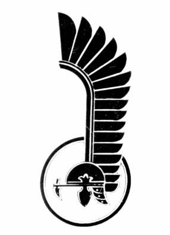
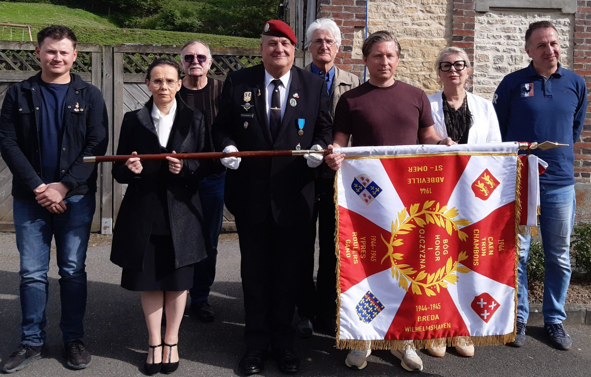
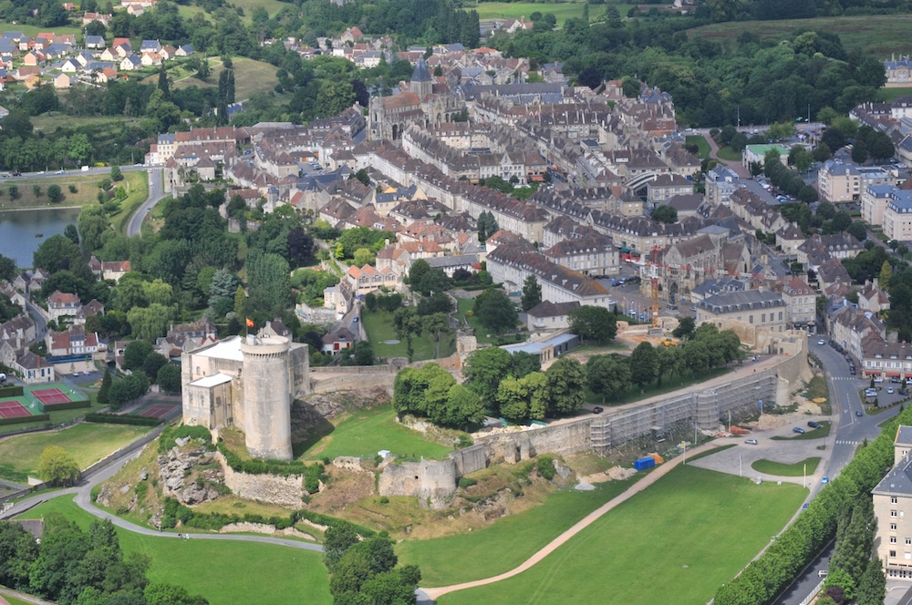

Création de la division
La 1re Division Blindée Polonaise est constituée au Royaume-Uni, avec des soldats polonais déterminés à poursuivre le combat contre l'occupation nazie.

ANS1DBP Association Nationale du Souvenir de la 1re Division Blindée PolonaiseMémoire
Préserver la mémoire des combattants polonais ayant participé à la Libération de la France et de l'Europe.
À propos
L'Association Nationale du Souvenir de la 1re Division Blindée Polonaise du Général Stanisław Maczek rassemble celles et ceux qui souhaitent honorer les soldats polonais engagés dans la Libération de la France et de l'Europe occidentale.
Elle entretient une mission de mémoire exigeante : organiser et participer aux cérémonies commémoratives, soutenir les dépôts de gerbes, assurer la présence des porte-drapeaux, conserver les liens entre familles, institutions et vétérans, et transmettre cette histoire aux nouvelles générations.
Son action fait vivre l'amitié franco-polonaise à travers des rencontres, des expositions, des conférences et des initiatives pédagogiques autour du parcours de la division.
La 1re Division Blindée Polonaise
Commandée par le général Stanisław Maczek, la division a marqué l'histoire militaire et humaine de la Libération.

La 1re Division Blindée Polonaise est constituée au Royaume-Uni, avec des soldats polonais déterminés à poursuivre le combat contre l'occupation nazie.
La division débarque en août 1944 et s'engage dans les opérations décisives de la bataille de Normandie.
Les unités polonaises jouent un rôle majeur dans la fermeture de la poche de Falaise et les combats du secteur de Mont-Ormel.
La division contribue à la libération de villes en France, Belgique, Pays-Bas et Allemagne, laissant une trace durable dans les mémoires locales.
Nos activités
Organisation de la cérémonie de Montormel liée à la commémoration de la bataille de la Poche de Falaise et aux combats de la 1re Division Blindée Polonaise du général Stanisław Maczek.
Représentation avec drapeaux, dépôts de gerbes et participation aux cérémonies commémoratives en Normandie.
Valorisation de documents, objets, témoignages et photographies.
Veille, monitoring et signalisation des problèmes concernant les mémoriaux, stèles et statues liés à la 1re Division Blindée Polonaise.
L’association renforce les liens entre la France, la Pologne et les pays libérés par la 1re Division Blindée Polonaise, en faisant vivre une mémoire commune au service de la paix, de la liberté et de l’amitié entre les peuples européens.
Membres du conseil d'administration élus le 26 avril 2026
Président d'Honneur
Président
Vice-Présidente - Relations polonaises et européennes
Vice-Présidente - Relations françaises
Secrétaire Général
Trésorier et Maître de cérémonies
Secrétaire Adjoint et Responsable publication Facebook
Porte-drapeau
Porte-drapeau Adjoint

Galerie

Visite 3D
Nous soutenir
Contact
Association Nationale du Souvenir de la 1re Division Blindée Polonaise
Association loi de 1901, à but non lucratif
Le 1901, Maison des associations
8 Rue Germaine Tillion
14000 Caen
W751118855